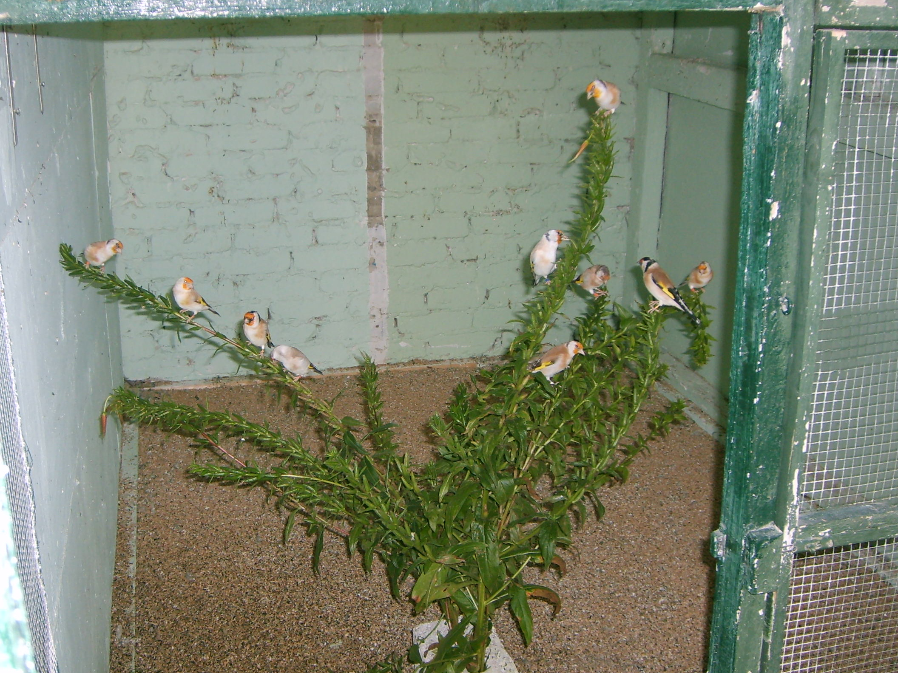

L'onagre, plante à tige dressée, anguleuse de 1 à 1,20 m. Ne poussant pas au-dessus de 700 m d'altitude. Porte de grandes fleurs couleur jaune soufre. Sur la tige se trouvent de nombreux fruits. L'Onagre bisannuelle pousse généralement au soleil ou à la mi-ombre. Pousse sur des sols assez sablonneux.
Tige assez droite sur laquelle sont situés les fruits.
Les feuille simple avec des nervures et de fins poils. Feuille assez longue.
La fleur est de couleur jaune soufre. Elle contient 8 étamines - 4 pétales de 4 à 5 cm plus courts que les 4 sépales. Cette fleur s'ouvre en quelques minutes en fin de journée, à la tombée de la nuit, et fane au lever du jour. Chaque soir de nouveaux boutons éclosent. L'étamine est courbée. Floraison de juin à septembre. Après la floraison vient ensuite le fruit qui mesure environ 2 à 3 cm. Ce fruit contient des acides gras poly-insaturés qui ralentissent le vieillissement de la peau.